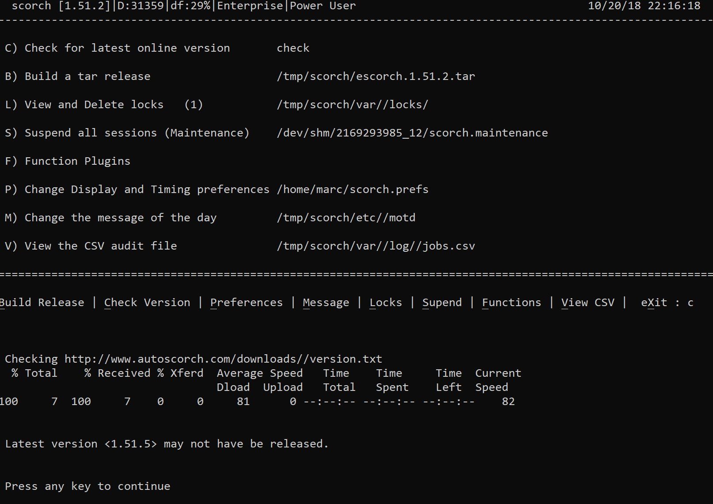
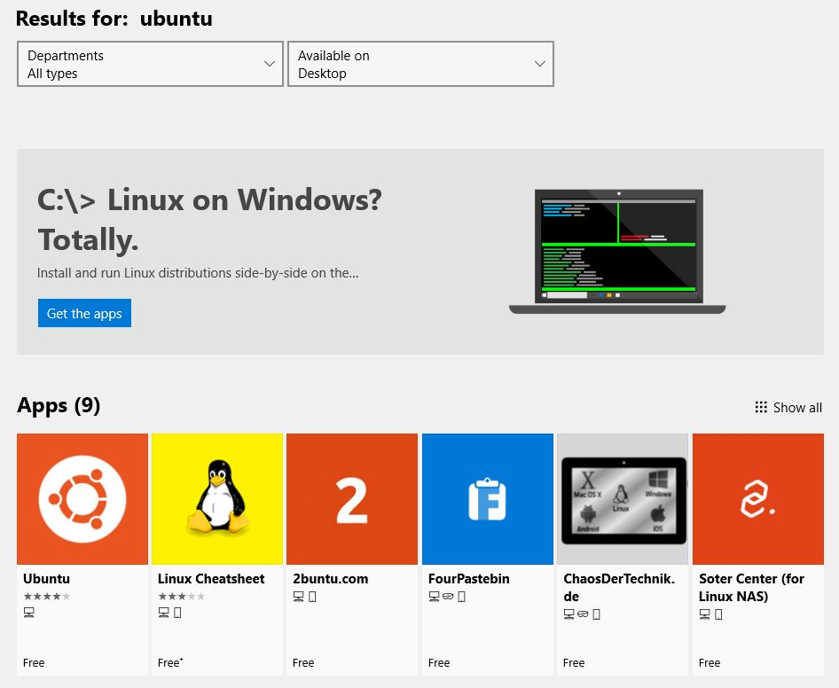

Download
There are several ways to try scorch for yourself and as its written in bash it doesnt even need special privledges.
- quick install
- controlled install
- into a docker linux
- from a dockerfile
1. Quick Install - Latest Version + demo job
Use the new install script to install the latest version of scorch suite in your current directory.
curl -o install http://www.autoscorch.com/downloads/install && chmod a+x install && ./install
2. Install into a chosen directory
You may wish to start in a directory under /tmp:
mkdir -p /tmp/scorchlatest cd /tmp/scorchlatest
Then
wget http://www.autoscorch.com/downloads/install chmod a+x install ./install
| NOTE |
|---|
|
This will extract the following files and directories into the current pwd etc/ functions/ jobs/ obrar* plugins/ projects/ python/ scorch* tmp/ var/ |
A demo job will be created consisting of the following safe tasks that run in parallel as groups. Task 3 will fail randomly to simulate real world scenarios.
1 : echo first task
2 : . sleep 15
3 : . printf ${RANDOM:4}
4 : fn_PIDWait
5 : echo sleep 15 completed
6 : . sleep 12
7 : . hostname
8 : fn_PIDWait
curl -o /tmp/scorch.tar autoscorch.com/downloads/escorch.2.7.2.tar
3. Centos Docker
Using the official centos build from dockerhub https://hub/docker.com/_/centos
docker pull centos # Then in docker yum install which
The following can then be used in the docker shell or directly into any other bash shell (including Bash for Windows)
mkdir /tmp/scorch
curl -o /tmp/scorch/scorch.tar http://autoscorch.com/downloads/escorch.2.6.tar
curl -o /tmp/scorch/obrar http://autoscorch.com/downloads/obrar.1.1
cd /tmp/scorch
chmod 755 obrar
tar xf scorch.tar
export PATH=${PATH}:/tmp/scorch
/tmp/scorch/obrar -install
obrar -l
./scorch -install4. Create your own image from the Dockerfile
Get yourself a copy of the Dockerfile from:
https://raw.githubusercontent.com/marlof/ScORCH/master/Dockerfile-0.1
Create the image file
docker build --network=host -f Dockerfile-0.1 -t webmarcit/scorch:latest .
Confirm the image was created
docker image ls
Run the image in a container (this wont exit unless its run in background, so you'll need an additional terminal)
docker run --rm -i --net=host webmarcit/scorch:latest
Find the container id
docker container ls
Run a shell in the container
docker exec -it <container-id> /bin/bash
Start scorch and add your first template from the demo plugins
./scorch
Release Version / Controlled Install
| Package | Description | Artefact | Checksum | Version | Last Update |
| scorch | Orchestration Suite | tar | md5 | E2.7 | 01 Sep 2019 |
| scorchdb | Lightweight CMDB | included | included | ||
| obrar | Deployment framework | shellscript | E1.1 | 19 May 2018 |
Running Scorch
It is recommended to add scorch to the path.
Updating a previous installation
Once downloaded and installed the latest version (including non-release versions) can be installed by pressing "a" for admin, "c" for check and "i" for install.

Creating your first job
Use 'n' to create a new job
This will load all the available plugins and provide an entry section
Enter the following which includes a full stop on a new line
Action : OBRAR-DEMO .
To start the job, queue it up by pressing the key 'q' and selecting the job number
The job will fail on the first run but it should give you a chance to test your skills and practice "Editing" a job.
Select job number
Look at the error in the log summary
Press "e" to edit
You are now in vi
/Task_2 and add a number after the -t for example 5
fn_Task_2(){ obrar DEMO1 -t 5
:wq
"R"esume the job
Bulk load example
Press the key 'n' to create a new job
Copy and paste the following block to create multiple jobs in one go
Action : DEMO-GROUP Environment : ST1 ST2 ST3 ST4 QA1 QA2 Action : DEMO-FLIPFLOP Environment : ST1 ST2 ST3 QA1 QA2 QA3 Action : OBRAR-DEMO Environment : ST1 ST2 ST3 ST4 QA2 QA3 QA4 Action : DEMO-HOSTNAME Environment : PROD1 PROD2 .
API Job Creation
./scorch -a DEMO-GROUP -s
A production system or system with no route to web - no problem
In some cases, it may be necessary to update scorch in a production environment where standard web access is not permitted. If you can get the escorch tar ball onto the target server, by means of a release process perhaps, then if the file can be copied into the scorch home directory, it can be queried as a local update. It just needs to be called scorch.tar
cp /tmp/release1.1/escorch.1.59.tar $dir_Base/scorch/scorch.tar
Edit the preferences to remove HTTP
Admin Menu -> Preferences
# Set Protocol for installing new version (http or local) (Blank also works for local currently) export str_Protocol="local"
And run the "C"heck for latest version online. A value returned will be from the version in scorch.tar. A quoted version is allowed.
scorch [1.45]| D:0| df:68%|Enterprise|Power User -------------------------------------------------------------------------------------------- C) Check for latest online version 1.59 B) Build a tar release /tmp/aps/framework/scorch/escorch.1.59.tar L) View and Delete locks (0) /tmp/aps/framework/scorch/var//locks/ I) Install latest version "1.59"
Running BASH on Windows 10
Since the "Fall Creators Update", bash no longer requires you to run Windows 10 in developer mode. Now just head over to the Microsoft Store and search for "ubuntu" and install the Ubuntu App.

Donate: Bitcoin Address 1HiGULnXeHkH3RYzeRFqBsCSotdYeNeKuq